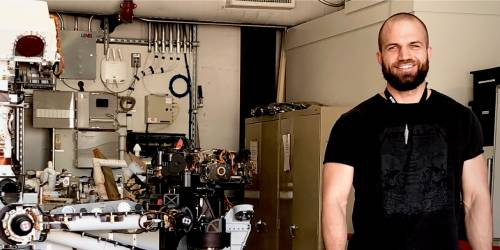
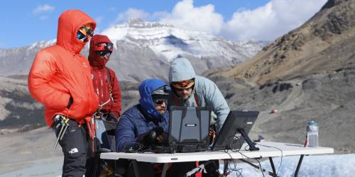
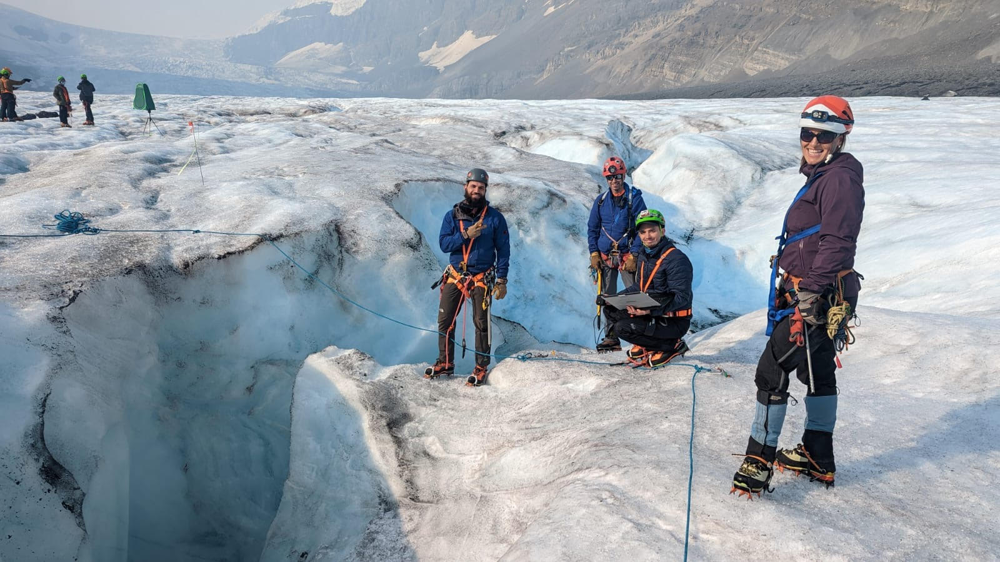

Marlin P. Strub
Roboticist and C++ enthusiast
| About | News | Research | Publications |
TLDR/Resumé - Click here for a detailed CV.
Experience
- Senior Robotics Engineer @ Gravis Robotics
- Robotics Technologist @ NASA/JPL
- Postdoc @ NASA/JPL
Education
- PhD Robotics @ Oxford
- MSc Robotics @ ETH Zürich
- BSc Mech Eng @ ETH Zürich
Community
- Co-maintainer @ OMPL
- Reviewer @ IEEE
- Skipper @ Swiss Mocean
Hi, I'm Marlin
I enjoy designing, implementing, and deploying planning and control algorithms that are both sound in theory and useful in practice. I'm a Senior Robotics Engineer at Gravis Robotics, where I own the path- and task-planning modules for autonomous excavators. I also serve as the squad lead for soil-moving tasks and the deputy team lead of the autonomy team. Before joining Gravis, I was a Robotics Technologist at NASA/JPL, where I owned the path-planning modules for the new Mars helicopters and for a snake-like robot called EELS.



When I'm not working with robots, I take pleasure in sharing delicious food, engaging in deep conversation, and spending time in the remote outdoors.
Education
I hold a PhD in Engineering Science from the University of Oxford, where I was a member of the Estimation, Search, and Planning (ESP) Group led by Dr. Jonathan D. Gammell. My research at Oxford focused on designing and implementing path-planning algorithms that can leverage different sources of information to improve planning performance for complex systems in robotics and beyond. I also hold an MSc in Robotics, Systems, and Control and a BSc in Mechanical Engineering from ETH Zürich. If you're interested in my work, please take a look at my research and publications pages.
Open-source contributions
I'm passionate about open-source software. Reference implementations of all algorithms I designed at ESP are publicly available in the Open Motion Planning Library (OMPL), which I'm currently a co-maintainer of. Jon and I also open-sourced our planner benchmark and development framework, which automatically generates publication-ready performance plots in PGF/TikZ whenever a benchmark is run (here's our workshop paper about it). I additionally contributed features and bug-fixes to various other projects, including OpenRAVE and Emacs.
The source code for this website is available here.